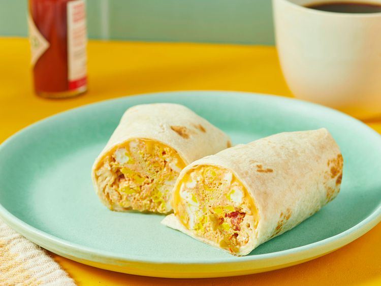

HOME
Minute Breakfast Burrito

Easy to make Burrito with three ingredients prepared in minutes
A fast DIY breakfast for the road that's made in minutes with scrambled egg, salsa, and cheese wrapped up in a tortilla.
Ingredients
- 2 large eggs
- 2 tablespoons salsa
- 1 slice reduced-fat American cheese
- 1 tortilla
Steps
- Step 1
Gather all ingredients.
- Step 2
Spray a cereal bowl with nonstick cooking spray. Crack the eggs into the bowl, add the salsa, and stir.
- Step 3
Microwave on high for 1 minute, stir, and cook for another minute or until the mixture firms up.
- Step 4
Place cheese in center of tortilla and top with egg mixture.
- Step 5
Wrap it all up like a burrito and head for the car!